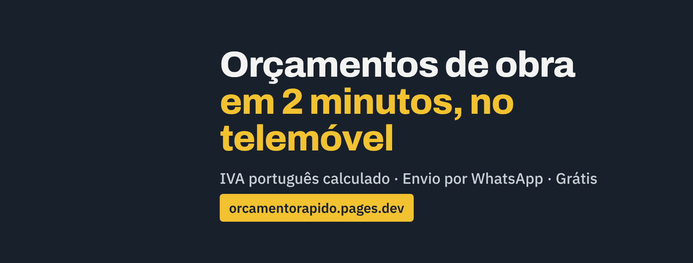
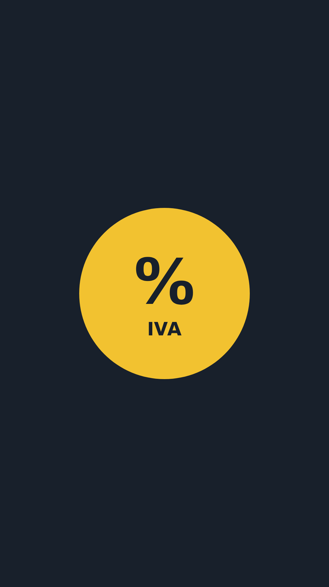
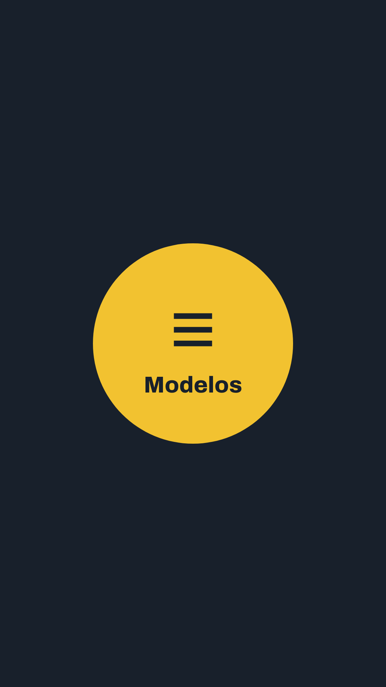
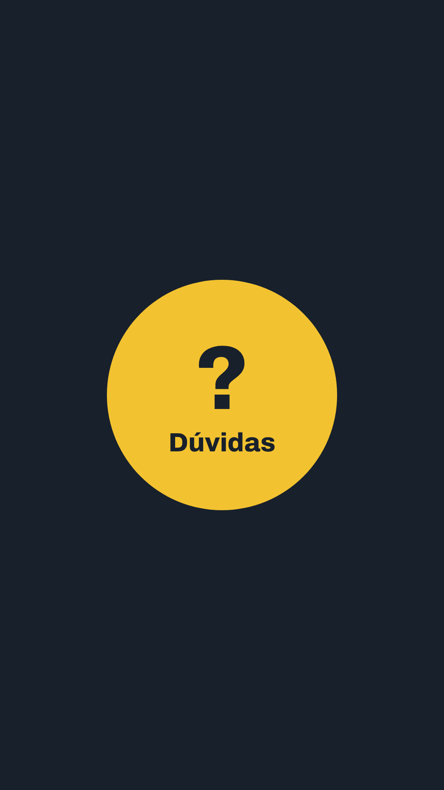

Foto: Construction Worker (CC0 1.0, https://stocksnap.io/photo/construction-worker-6B70C91911)
Para publicar: toque na imagem e guarde-a (a da esquerda é para o feed, a da direita para stories), depois copie a legenda. Fotos CC0 do StockSnap, de uso livre.
Foto de perfil, capa do Facebook e capas dos destaques do Instagram. Toque para abrir e guardar.

capa-facebook.pngdestaque-comousar.png
destaque-iva.png
destaque-modelos.pngdestaque-pro.png
destaque-duvidas.pngFoto: Construction Worker (CC0 1.0, https://stocksnap.io/photo/construction-worker-6B70C91911)
Foto: Tools Workshop (CC0 1.0, https://stocksnap.io/photo/tools-workshop-KD30XPQR0A)
Foto: Mobile Phone (CC0 1.0, https://stocksnap.io/photo/mobile-phone-286QGA5HBN)
Foto: Electrician Electricity (CC0 1.0, https://stocksnap.io/photo/electrician-electricity-QJ55PI34SY)
Foto: Painting Paintroller (CC0 1.0, https://stocksnap.io/photo/painting-paintroller-CMUNDXFEWK)
Foto: Construction Renovation (CC0 1.0, https://stocksnap.io/photo/construction-renovation-MF4PFAS13H)